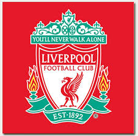
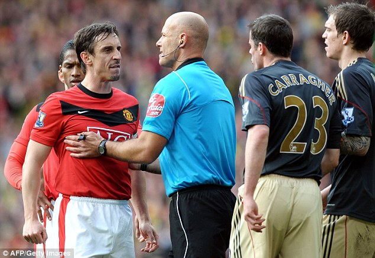
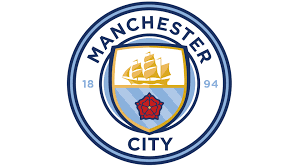
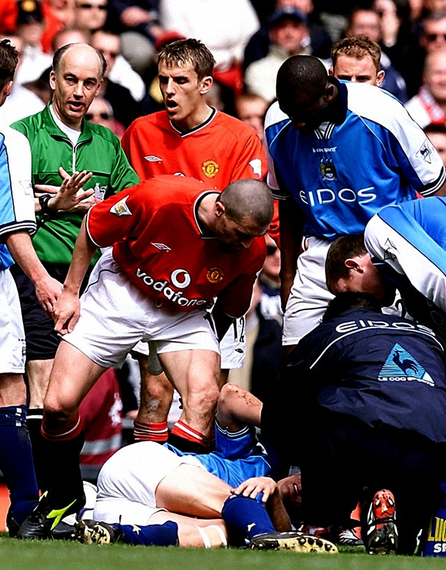
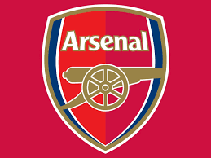
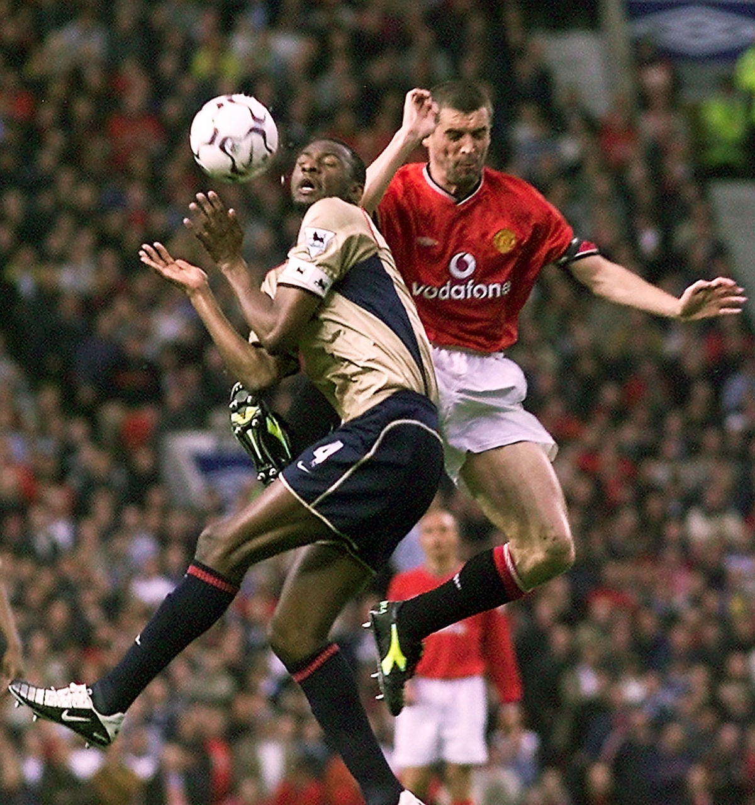
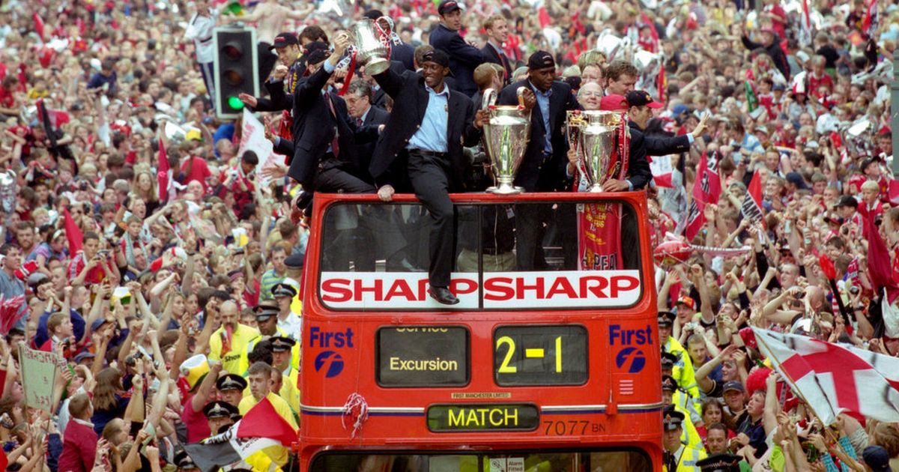
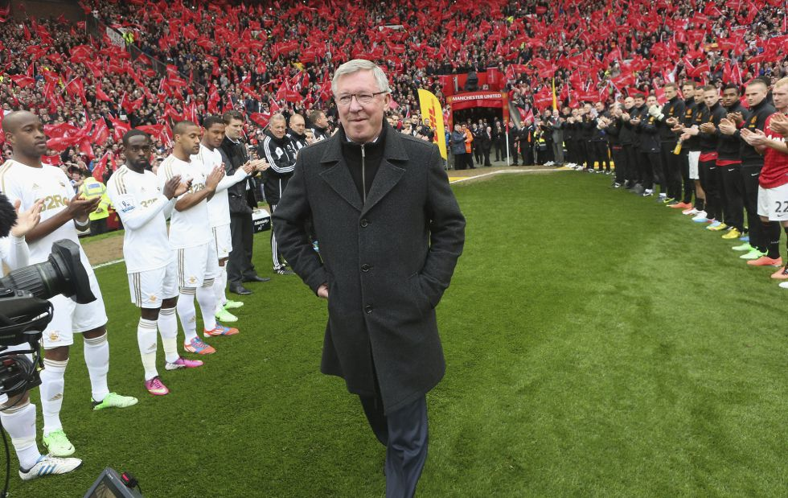

Club info
-
Rivalries
Liverpool FC 
The rivalry with Liverpool is rooted in competition between the cities during the Industrial Revolution when Manchester was famous for its textile industry while Liverpool was a major port. 
The two clubs are the most successful English teams in both domestic and international competitions; and between them they have won 39 league titles, 9 European Cups, 4 UEFA Cups, 5 UEFA Super Cups, 19 FA Cups, 13 League Cups, 2 FIFA Club World Cups, 1 Intercontinental Cup and 36 FA Community Shields.
It is considered to be one of the biggest rivalries in the football world and is considered the most famous fixture in English football. Former Manchester United manager Alex Ferguson said in 2002, "My greatest challenge was knocking Liverpool right off their fucking perch".
Manchester City FC
The Manchester derby refers to football matches between Manchester City and Manchester United, first contested in 1881. United play at Old Trafford while City play at the City of Manchester Stadium, the two grounds separated by approximately 4 miles (6.4 km).
The teams have played 182 matches in all competitions, United winning 76, City 54, and the remaining 52 having been drawn. Amongst the most successful clubs in England, between them they have won 92 honours: a record 66 for Manchester United and 26 for Manchester City.
Arsenal FC 
Although Arsenal and Manchester United have frequently been in the same division in English football since 1919, the rivalry between the two clubs only became a fierce one in the late 1990s and early 2000s, when the teams regularly competed against each other for the Premier League title and FA Cup.
There was also an enmity between the managers, Arsenal's Arsène Wenger (1996–2018) and United's Sir Alex Ferguson (1986–2013), and club captains Patrick Vieira and Roy Keane,[1][2][3] and their contests often involved on-field trouble – seven red cards were shown in matches from February 1997 to February 2005.
-
Franchise records
Manchester United have won more trophies than any other club in English football,[5][6] with a record 20 League titles, 12 FA Cups, five League Cups and a record 21 FA Community Shields. United have also won three UEFA Champions Leagues, one UEFA Europa League, one UEFA Cup Winners' Cup, one UEFA Super Cup, one Intercontinental Cup and one FIFA Club World Cup.
In 1998–99, the club became the first in the history of English football to achieve the continental European treble.[7] By winning the UEFA Europa League in 2016–17, they became one of five clubs to have won all three main UEFA club competitions.
-
Manager
Sir Alexander Chapman Ferguson CBE (born 31 December 1941) is a Scottish former football manager and player widely known for managing Manchester United from 1986 to 2013. He is considered one of the greatest managers of all time and he has won more trophies than any other manager in the history of football.
 maFerguson was appointed manager of Manchester United in November 1986. During his 26 years with Manchester United he won 38 trophies, including 13 Premier League titles, five FA Cups, and two UEFA Champions League titles.[12] He was knighted in the 1999 Queen's Birthday Honours list for his services to the game.[13] Ferguson is the longest-serving manager of Manchester United, having overtaken Sir Matt Busby's record on 19 December 2010. He retired from management at the end of the 2012–13 season, having won the Premier League in his final season.